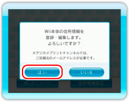

登録した住所をあとから修正・削除するには、次の手順を行ってください。
19 |
登録した住所を修正・削除する |
 |
|
● 登録した住所を修正する 1.タイトル画面で「住所情報設定」を選ぶ

2.「はい」を選ぶ 3.暗証番号を入力し、 
4.修正したい住所を選ぶ 5.各項目を入力し、 6.入力した内容に間違いがないか確認し、「保存」を選ぶ ほかの住所を続けて修正する場合は、手順4〜6を繰り返してください。 ● 登録した住所を削除する 「自宅」の住所を削除したい場合は、「住所情報」画面で「全情報消去」を選びます。 |
 |
 |
 |